Introduction
This is an introductory guide to use ArcGIS StoryMaps to create and share interactive and multimedia stories.
A video tutorial is also available. Click here if you prefer to use the video guides.
You will learn to login to ArcGIS StoryMaps using your Temple University account, the basics of the StoryMaps workspace, to create your first StoryMap with a cover, title and subtitles, to add multimedia and interactive elements to your story and, to publish and share the story.
What is ArcGIS StoryMaps?

ArcGIS StoryMaps is a web-based storytelling platform created by Esri that combines interactive maps with narrative text, images, videos, and other multimedia content. It’s designed to help people create compelling, map-based stories that communicate information in an engaging way.
StoryMaps lets you build narratives that readers scroll through, with maps that can zoom, pan, and reveal different layers of information as the story unfolds.
It’s particularly useful when location is central to understanding your story - whether you’re documenting historical events across different places, showing environmental changes over time, or explaining how geographic factors influence a situation. The tool is accessible to non-technical users while still offering customization options for those who want more control over the design.
Getting Started
This section will show you how to get started using ArcGIS StoryMaps through your Temple University Account and the main workspace.
Open a web browser
Open Chrome, Firefox, Safari, or your preferred browser.
ArcGIS StoryMaps works best on the latest versions of major, WebGL-enabled desktop browsers, including Google Chrome, Mozilla Firefox, Apple Safari, and Microsoft Edge.
Type https://storymaps.arcgis.com/ on the navigation bar or search Storymaps arcgis
Sign in to ArcGIS StoryMaps
- Click the
Sign In button on the main page
- Select
Your ArcGIS organization's URL (not the personal login option)
Enter your organization URL
- Type
temple in the organization field
- The full URL should display as: temple.maps.arcgis.com
- Click
Continue
You can always sign in using a free personal account. However, using the organizational license will give you access to more features and products from Esri. Get more info here
Log in with your Temple credentials
- Enter your TUaccess username and password
- Use the same credentials you use for other Temple systems
Understanding Your Workspace
Once logged in, you’ll see your ArcGIS StoryMaps workspace with the following sections:
- On the center, you will see the Content, a gallery of the storymaps you have created.
- On the left, you will see many options to Filter the storymaps you are seeing in the gallery:
- My Stories - View story maps you’ve created
- My Favorites - Access story maps you’ve favorited
- My Groups - See groups you belong to within ArcGIS
- My Organization - Browse all story maps created by Temple users (great for inspiration!)
- On the bottom left you can find Quick Links - Access tutorials, tips, and story planning guides

Creating Your First StoryMap
Start a New Story
Create a new story
- Click the
Create button in the top right corner
- Select
Story from the dropdown menu
- The Story Builder will launch

Understanding the Interface
Before you start editing, note the following elements in the top menu bar:

- Draft status - Your story is private until you publish it. No one else can see it, even other Temple users.
- Auto-save - Changes are saved automatically
- Undo/Redo buttons - Located in the top menu
Add Content
Add a heading
- Click in the Tell your story area below the cover
Type your heading (example: “The Most Important Sites”)
- Click on the text to reveal formatting options
Select a text style from the dropdown option, or change the size and type as you want.
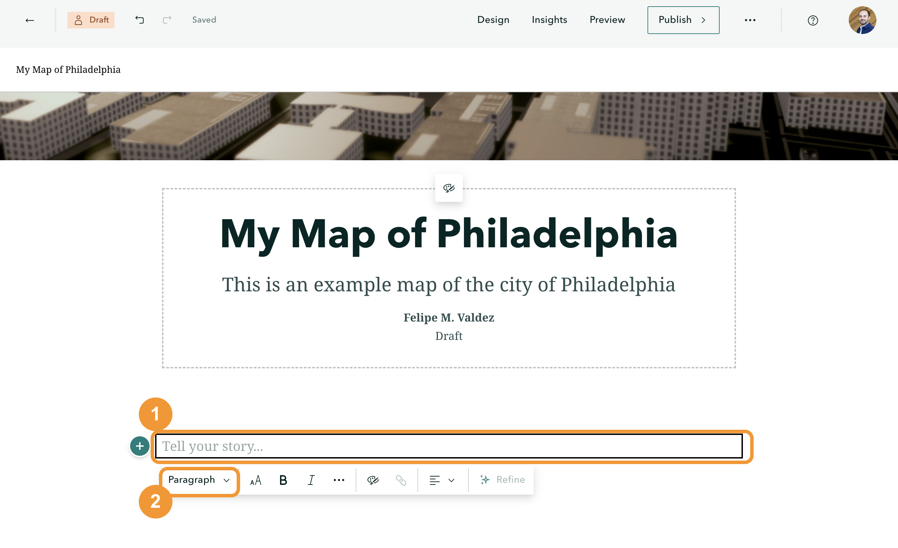
Add body text
- Click below your heading
- Type your paragraph text (example: “This section highlights the most important sites to see in Philadelphia”)
Format as needed using the text editor (similar to Microsoft Word)
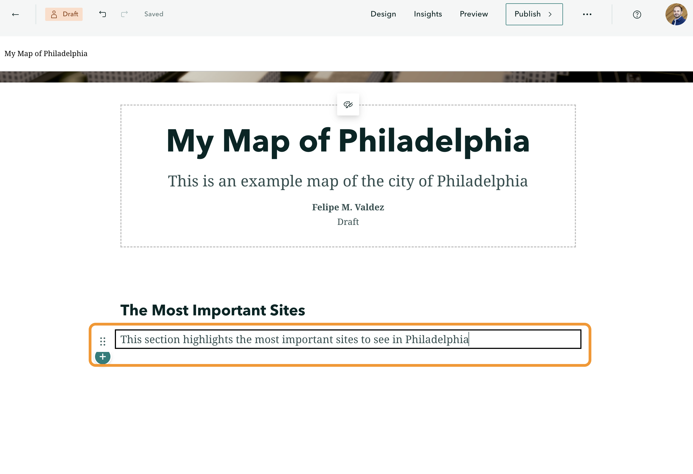
Additional Content Options
You can add various elements to your story by clicking the plus button :
- Buttons - Link to other pages or resources
- Code blocks - Embed custom code
- Multimedia - Images, image galleries, videos, audio
- Embeds - Content from other websites
- ArcGIS content - Maps and other features from your ArcGIS account
Save Your Work
- Check the top menu bar to confirm your changes have been saved (auto-save is enabled)
- Your story remains in Draft status until you publish it
- To return to your content library, click the back arrow (←) in the top left
Your new story will appear in your content list with:
- Title
- Short description
- Draft status indicator
- Creation date
Remember Your story is not visible to anyone else until you click Publish. You can continue editing and saving as a draft as long as you need.
Adding a Map to Your Story
Create an Express Map
- Open your story for editing
- From your content library, click on your story (e.g., “My Map - Philadelphia”)
- Add a map block
- Click the plus sign below any existing content block
- Select Map from the Data Visualization section
- Choose Create Express Map
- If you haven’t created any maps yet, you won’t see a list of existing maps
- Click Create Express Map (first option)
- A map of the world will appear (you may see a guided tour on first use)

Navigation Tips
Use your mouse wheel to zoom in/out
Use the zoom buttons (+/-) on the map
Use the Search by location bar (top right) for easier navigation
Add Locations to Your Map
Search for a location
- Click on the Search by location bar (top right corner) and type the place name or address
- For places: “Philadelphia, PA”
- For addresses: Include street number, street name, and city
- Adding the city name or zip code helps find the correct location
- Select the correct result from the dropdown list
- The map will automatically zoom to that location
- A blue pin will appear at the center
- Click Add to map in the popup

Add Multiple Locations
Repeat the search and add process for each location you want to include:
- Search for the next location (e.g., “Philadelphia Museum of Art”)
- Click
Add to map
- Add an image, edit the title, and add a description
- Customize the pin color and size
- Click
Save
Viewing Your Points
After saving a point, the map may only show that last point. Zoom out to see all your points together. The map remains interactive - you can always zoom in/out to explore.
Preview Your Story
- Click
Preview in the top menu bar

- View how your story looks on different devices:
- Desktop
- Tablet (portrait and landscape)
- Phone (portrait and landscape)
- Click the
X to exit preview mode

Interactive Features
Once published, your map will be interactive for viewers:
Hovering over pins shows the title
Clicking on pins reveals:
- Full title
- Image (if added)
- Description
- Attribution
Users can zoom and pan to explore
If you have a description longer than a few words, viewers will see a “Read more” link when hovering over the pin. Clicking it displays the full description.
Adding a Sidecar (Immersive Experience)
What is a Sidecar?
A Sidecar creates an immersive, scrolling experience that combines maps or media with narrative content. As users scroll through your story, the map updates to show different locations while text and images appear alongside.

Choose a Sidecar Layout
- Add a Sidecar block
- Click the + (plus sign) to add a new content block
- Scroll down to the Immersive section
- Click Sidecar

- Select a layout style
- Docked - Content panel fixed on one side, map on the other
- Floating - Map fills the screen with floating text/image panels
- Slideshow - Traditional slide-by-slide presentation style
- Click Save to create the Sidecar

You can change the layout at any time. Start with one and switch if you want a different visual effect.
Create Your First Slide
Add a map
Click Add in the large panel on the right
Select Map from the media options
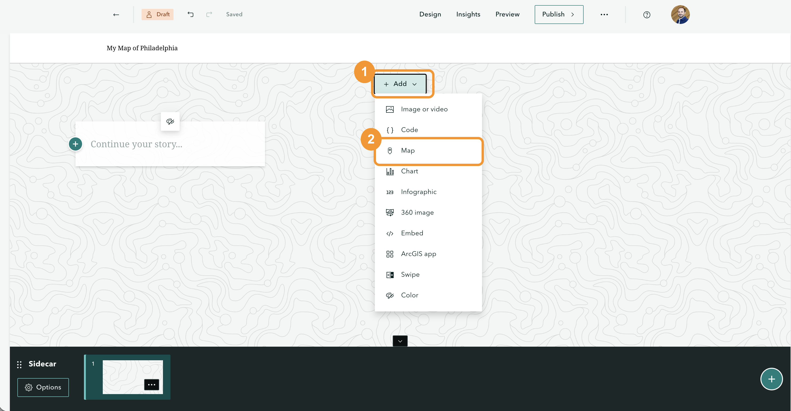
The following process is the same as Section 6.2.1
Choose Express Map
Search for your location (e.g., “Philadelphia Museum of Art”)
Select the correct result from the dropdown
Click Add to map if you want a pin at that location
Click Save twice (once for the point, once for the map)

Add content to the left panel
- Add a title
- Type your location name (e.g., “Philadelphia Museum of Art”)
- Select the text and choose Heading 2 for consistent formatting

- Add an image
- Click the + button in the left panel
- Select Image
- Click Browse and select your image file
- Add a Caption (e.g., “Source: Wikimedia Commons”)
- Click Add
- Add descriptive text

- Click the + button again
- Type your description
- Format and style the text as needed (links, bold, colors, etc.)
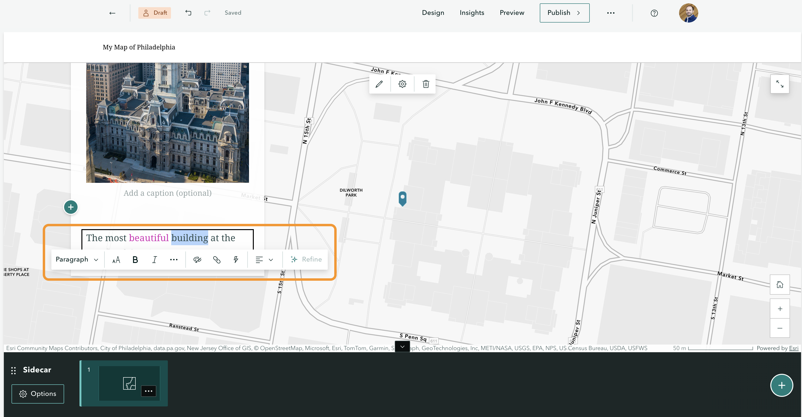
To format the text, simply select the words you want to change to see the formatting options.
Add More Slides
Create a new slide
- Click the + New slide button at the bottom of the screen
- You’ll see a blank slide (numbered sequentially: 1, 2, 3…)
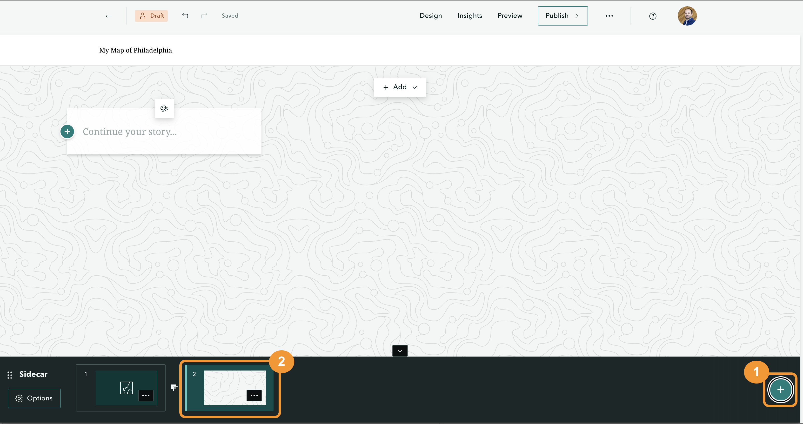
Add content to the new slide
Repeat the same process for each location:
- Add a map (search for the new location)
- Add a title (use Heading 2 or any other type you want)
- Add an image or video
- Add descriptive text
The order you add elements doesn’t matter. You can add the title first, then the image, then the map - whichever order works best for you. You can add any content to your story.
Manually add a map point (if search doesn’t work)
If the search doesn’t find the exact location you want:
- Zoom to the approximate area on the map
- Click the Point tool in the top menu bar
- Your cursor will change to a crosshair
- Click on the map where you want to place the point
- Add a title and any other details
- Click Save

- Click
Preview in the top menu
- Scroll through your story to see how the Sidecar works:
- The map updates as you scroll
- Content appears in the side panel
- Transitions occur smoothly between slides
Change the Sidecar Layout
You can switch layouts at any time:
- Click
Options below the slide navigation bar
- Select
Change layout
- Choose a different layout:
- Docked - Fixed panel alongside map
- Floating - Full-screen map with floating content panels
- Slideshow - Traditional slide presentation

- Click
Save
Use Floating when the map is the most important visual element
Use Docked for a balanced mix of content and map
Use Slideshow for a more traditional presentation style
Consider your audience’s devices when choosing a layout
Adding a Map Tour (Immersive Experience)
What is a Map Tour?
A Map Tour is similar to a Sidecar but designed specifically for showcasing multiple locations on a map. The key difference is that locations are numbered sequentially, and the interface is optimized for point-to-point navigation.

Create a Map Tour
- Click the + (plus sign) to add a new content block
- Scroll to the Immersive section and click Map Tour

Select a layout:
- Map focused - Large map with floating content panels (similar to Sidecar)
- Media focused - Large images/videos with smaller map on top
- Explorer Tours - Grid - Image grid with map, click to explore
- Explorer Tours - List - Vertical list of images with map
Click Save
- Map Tour uses numbered location markers (1, 2, 3…) instead of custom pins
- Content structure is pre-defined (image, title, description)
- Better for sequential point-to-point tours
Add Your First Location
Add media and text
The left panel has dedicated spaces for:
- Image or video - Click to browse and upload your file
- Adjust the focal point (center on the important part of the image)
- Choose display options (fill, fit, etc.)
- Title - Pre-formatted as a header
- Description - Add details about the location
- Format text, add hyperlinks, style as needed
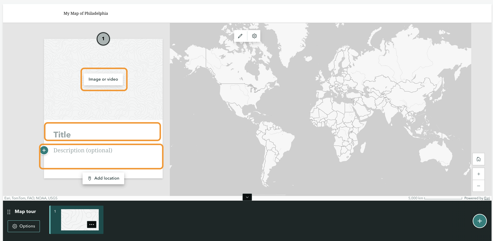
Add the map location
Click 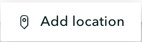 located below the block, the map will zoom out to show the full view
Choose one of two methods:
Method A: Search
- Use the Search by location bar
- Type the place name or address
- Select from the dropdown results
- The map zooms to that location
- Click
Add to map
Method B: Manual placement
- Zoom in or out to the area
- Click on the map where you want to place the marker
- Click
Add to map
Click Use current zoom level. Use the zoom level you prefer.
Click Save, your first location appears with a #1 marker
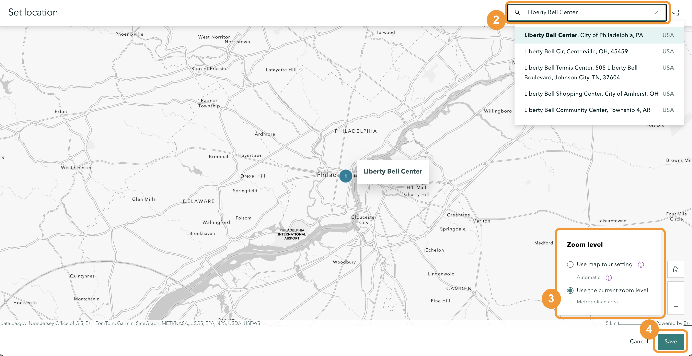
Add Additional Locations
- Create a new slide
- Click the + New slide button on the right side of the map
- Add content (repeat for each location):
- Upload an image or video
- Add a title
- Add a description
- Click Add location and search for the place
- Adjust zoom level
- Click Use current zoom level
- Each location receives a sequential number (1, 2, 3, 4…)

If you add a slide while viewing an existing one, the new slide will be inserted after the current slide. You can reorder slides using the options menu (three dots).
Change the Layout
You can switch layouts at any time:
- Click Options in the Map Tour settings
- Select Change layout

- Choose a different option:
Map Focused - Full-screen map with content floating on top - Best for emphasizing geography and spatial relationships
Media Focused - Large image/video display with smaller map above - Best for strong visuals where the map provides context
Explorer Tours - Grid - All images displayed as a clickable grid - Map shows all locations at once - No sequential order - free exploration - Click any image to view details and zoom to location
Explorer Tours - List - Vertical list of images with text - Map on the side - Similar to grid but in list format
- Click Save
- Click Preview in the top menu
- Navigate through your tour:
- Scroll or click through numbered locations
- Watch the map update to each stop
- Test the interactive features
- In Grid or List Explorer layouts:
- Click on any image to view that location
- The map zooms to the selected point
- Close the detail view to return to the overview
- Map Focused - When geography and spatial context are most important
- Media Focused - When you have compelling images/videos that deserve prominence
- Explorer Grid/List - When you want users to explore freely without a set path, or when you have many locations to display
Key Differences: Sidecar vs. Map Tour
| Markers |
Custom icons/colors |
Numbered circles (1, 2, 3…) |
| Content structure |
Flexible, add any blocks |
Pre-defined (image, title, description) |
| Best for |
Flexible storytelling with maps |
Sequential point-to-point tours |
| Navigation |
Scroll-based only |
Scroll or click-based (depending on layout) |
Publish and Share Your StoryMap
Add Credits (Optional but Recommended)
Before publishing, you can add credits and attributions at the end of your story:
- Scroll to the bottom of your StoryMap
- You’ll see a dedicated Credits section
- Add a title (e.g., “Credits,” “Acknowledgments”)
- Add content blocks for different types of credits:
- Thank contributors or collaborators
- Attribute images (e.g., “Images: Wikimedia Commons”)
- Credit data sources
- Acknowledge funding or support
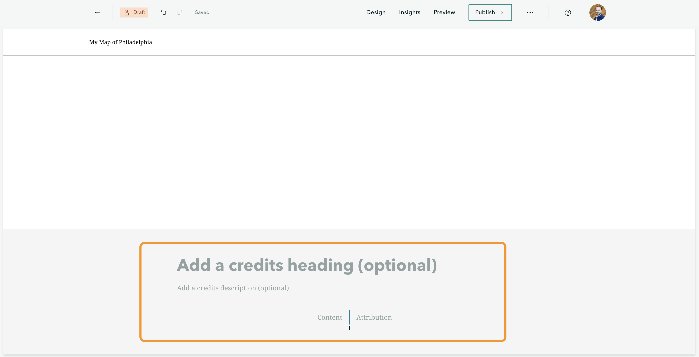
Best Practice Always credit your sources, especially for images, data, and other media. This is both ethical and often legally required.
Publish Your StoryMap
- Click Publish in the top menu bar
A dialog box will appear with sharing options

- Choose a Sharing Level
Private (default) - Only you can view the story - Not searchable by others - Good for drafts and work in progress
Organization - Anyone in your organization can view it - Temple users can search for and find your story - Good for internal projects or campus-wide sharing
Public - Anyone can view the story - Searchable by all ArcGIS Online and StoryMaps users - Good for public outreach, portfolios, or general audiences
- Additional Publishing Options
Before clicking Publish, consider:
- Allow others to duplicate this story - Check this if you want people to copy and adapt your work
- Include in search - Determines if your story appears in search results
Click Publish
Wait a few seconds while the story publishes (longer for media-heavy stories)
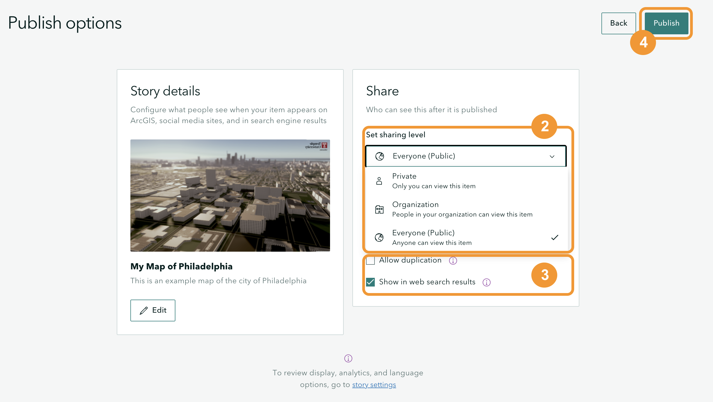
Share Your Published Story
After publishing, you’ll see a sharing screen with multiple options:
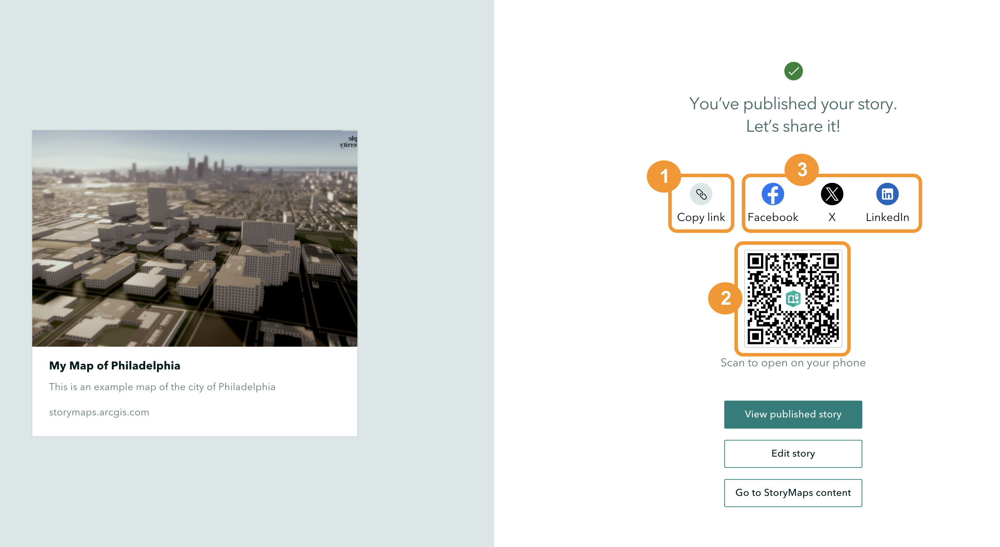
- Copy and Share the Link
- Copy the direct link to share via email, messaging, or embed on websites
- Paste the link in a new browser window to preview the published version
- You won’t see editing tools
- This is exactly how viewers will see your story
- Use the QR Code
- A QR code is automatically generated
- Users can scan it with mobile devices to access your story
- Download the QR code as an image for:
- Presentations
- Posters
- Print materials
- Conference materials
- Share on Social Media
Use the provided links to share directly on:
- Facebook
- Twitter
- LinkedIn
- Other platforms
Manage Published Stories
View Publication Status
In your content library, published stories show different icons:
- Globe icon 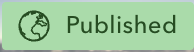 - Story is public (visible to everyone)
- Building icon
 - Story is organization-only (Temple users)
- Story is organization-only (Temple users)
- Person icon 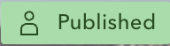 - Story is private (only you)
- Draft 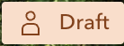 - Story has not been published yet
Sharing Level Comparison
| Private |
Only you |
No |
Drafts, personal work |
| Organization |
All Temple users |
Yes (within Temple) |
Campus projects, coursework |
| Public |
Anyone |
Yes (globally) |
Public outreach, portfolios, general audiences |
Remember - Always review your credits and attributions before publishing - Test your story’s appearance on different devices using the Preview feature - You can change sharing settings at any time after publishing - Consider your audience when choosing a sharing level
After Publishing
Once published, you can:
- Continue editing (changes save automatically)
- Update sharing settings at any time
- Unpublish if needed (returns to draft status)
Custom Design and Layout
Access Design Options
- Click Design in the top menu bar
- The Design panel opens with customization options
Publishing Updates After making design changes, you’ll see “Unpublished changes” in orange at the top. Remember to click Publish again to update the live version.
- Customize the Cover Layout
Choose from different cover styles to change how your title and cover image appear:
Available cover layouts:
- Top - Smaller image at top with title below
- Minimal - Compact version with less prominent image
- Full - Image covers the entire screen with title overlaid
- Side-by-side - Image and text share the screen
- Apply a Theme
- In the Design panel, browse Themes
- Select from pre-made themes:
- Summit (default)
- Other theme options available
- Themes control:
- Font choices
- Text sizes
- Color schemes
- Overall visual style
- Enable Navigation
The navigation feature adds a menu to help users jump between sections:
- In the Design panel, toggle Navigation on
- A navigation bar appears showing:
- Main section headings (Heading 1 and Heading 2)
- Credits section
- Any custom section titles you’ve added

How navigation works:
- Navigation links appear at the top of your story
- Clicking a link jumps to that section
- The current section is underlined or highlighted
- Great for longer stories with multiple sections
When to Use Navigation Enable navigation if your story: - Has multiple distinct sections - Is longer than 3-4 scrolls - Benefits from allowing users to jump to specific topics - Contains reference material users might want to revisit

Add sections to navigation
Any text formatted as Heading 1 or Heading 2 automatically appears in the navigation menu:
- Add a text block where you want a new section
- Type your section title (e.g., “The Last Section”)
- Select the text
- Choose Heading 1 or Heading 2 from the formatting options
- The section appears in the navigation menu automatically
Always Use the Latest Version Make sure you’re sharing the published version with all your latest changes. If you see “Unpublished changes” at the top, click Publish before sharing.
Design Best Practices
- Cover layout - Choose based on your image and title length
- Long titles work better with side-by-side or top layouts
- Striking images work well with full-screen layouts
- Text positioning - Ensure text is readable against your cover image
- Avoid placing text over busy parts of the image
- Consider adding a semi-transparent overlay if text is hard to read
- Navigation - Enable for stories with:
- 5+ sections
- Complex content users might want to reference
- Educational or instructional content
- Themes - Stick with one theme for consistency
- Test different themes to see which fits your content
- Consider your audience (formal vs. casual)
- Mobile preview - Always check mobile appearance
- Most users may view on phones or tablets
- Adjust layouts if mobile version doesn’t look good
![]()